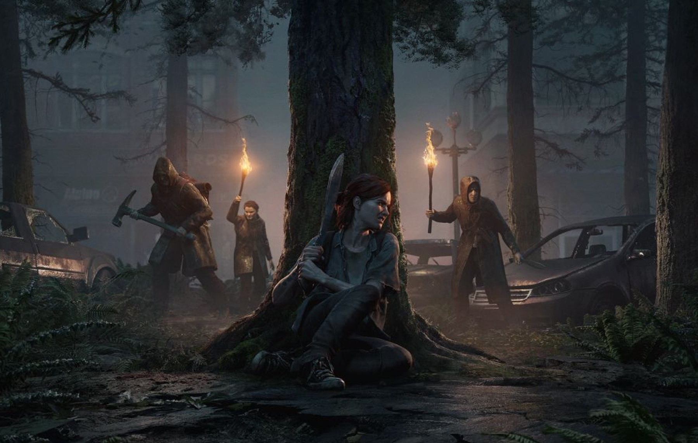
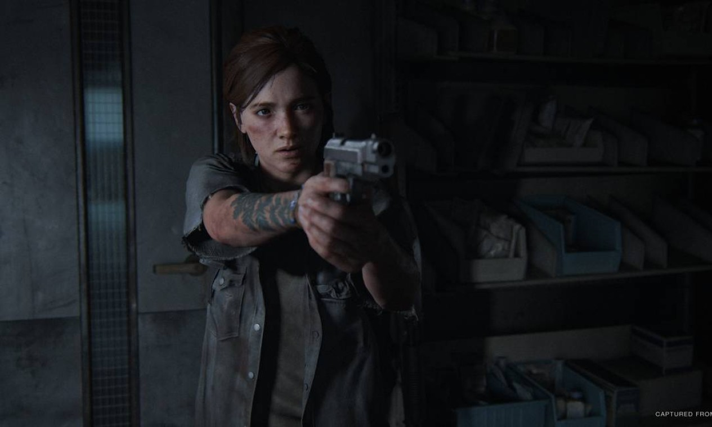
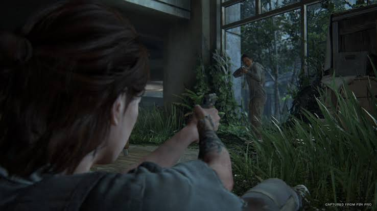

PLAYSTATION STUDIOS
Em um mundo devastado por uma pandemia, Ellie embarca em uma jornada marcada por perda, sobrevivência e vingança.
Saiba maisUMA JORNADA DE SOBREVIVÊNCIA
The Last of Us Part II apresenta uma história intensa ambientada em um mundo pós-apocalíptico, onde sobrevivência e escolhas pessoais caminham lado a lado.
Acompanhe Ellie em uma jornada por diferentes regiões dos Estados Unidos enquanto ela enfrenta inimigos, desafios e as consequências de suas próprias decisões.
SOBREVIVA AO FIM
Uma experiência construída em torno de exploração, sobrevivência e narrativa.
Explore ambientes abandonados, florestas e cidades devastadas enquanto procura recursos e pistas.
Utilize recursos limitados, crie equipamentos e enfrente diferentes tipos de ameaças.
Vivencie uma história marcada por perdas, conflitos e decisões que transformam os personagens.
UM MUNDO EM RUÍNAS


